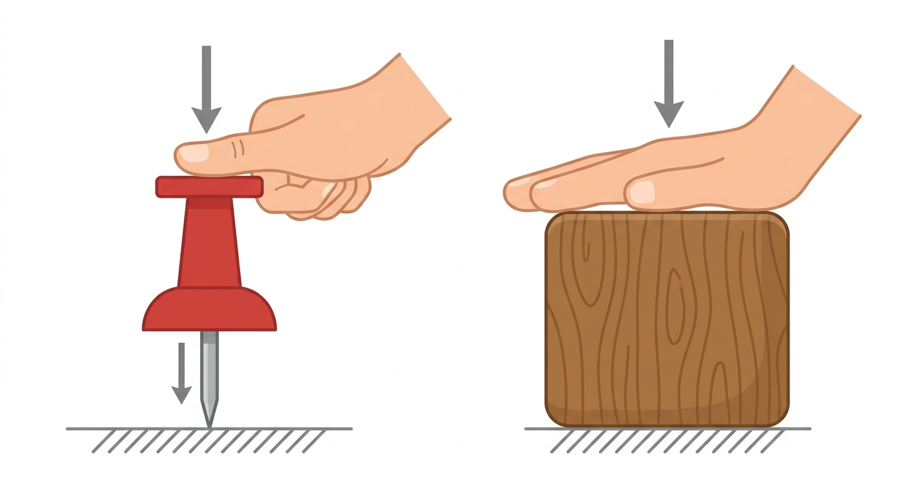
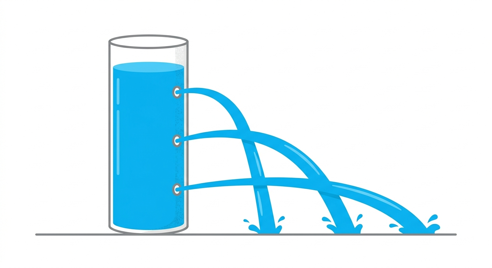
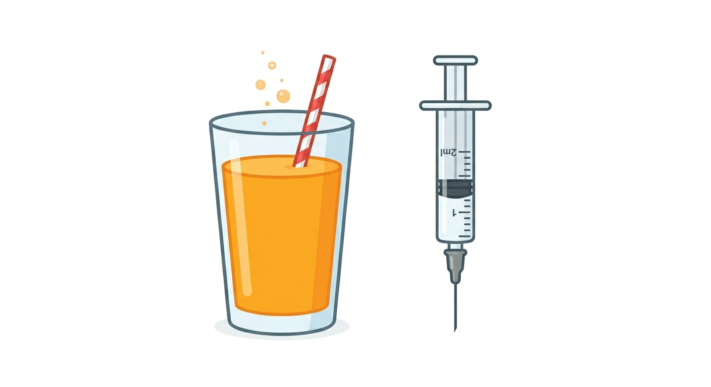
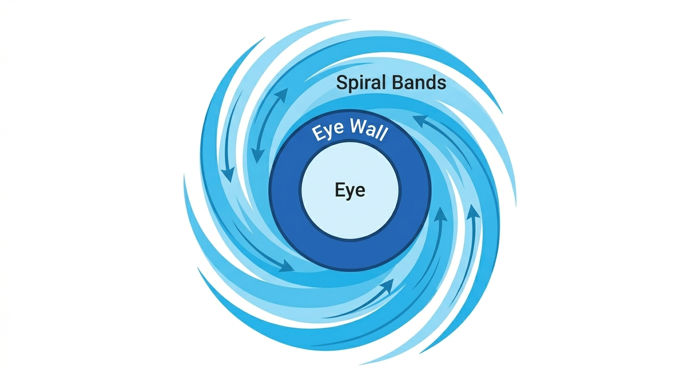

Have you ever noticed that a sharp thumbtack goes easily into a board, but a blunt bottle cap does not? This is because the sharp tip concentrates the force over a very small area, creating a much larger effect. This effect is known as pressure.
Pressure is defined as the force applied per unit area. It tells us how concentrated or spread out a force is.
Measuring Pressure:
Formula: Pressure = Force / Area
The standard SI unit of pressure is the Pascal (Pa), which is equal to one Newton per square metre (N/m²). In weather forecasting, units like millibar (mb) and hectopascal (hPa) are also commonly used.
Applications of Pressure in Daily Life:
- School Bags: Broad straps are used to spread the weight over a larger area of the shoulders, reducing pressure and pain.
- Knives & Nails: Designed with sharp edges and pointed tips to decrease the contact area, increasing pressure for easy cutting or piercing.
- Tractor Tyres: Tractors have broad, wide tyres to spread their heavy weight over soft soil, preventing them from sinking.

Liquids have weight, and because of this weight, they exert pressure continuously on the bottom and the walls of the container holding them. Water spurting out from the holes of a shower is an example of liquid pressing outward.
Real-Life Examples:

The thick blanket of air surrounding the Earth is called the atmosphere. Since air has weight, it presses down on the Earth's surface. This pressure exerted by the weight of air is called atmospheric pressure.
We do not get crushed by this massive pressure because the fluids and gases inside our body push outward with the exact same amount of pressure, keeping everything balanced.
Nosebleeds at High Altitudes: At very high mountains, the external atmospheric pressure drops significantly. However, our internal blood pressure remains high. This sudden difference can cause tiny blood vessels in the nose to burst, leading to nosebleeds.
Moving air is called wind. Winds are primarily caused by the uneven heating of the Earth's surface by the Sun. Air always moves from regions of High Pressure to regions of Low Pressure.
When air moves very fast, its pressure decreases compared to still air. This is why very strong winds blowing over a rooftop can lower the air pressure above the roof. The higher pressure inside the house can then push upward and blow the roof off entirely!
Measuring Wind:
- Wind Vane: An instrument with a rotating arrow used to show the direction of the wind.
- Anemometer: An instrument with rotating cups used to measure the speed of the wind (in km/h or m/s).
A storm is a violent disturbance in the atmosphere. Storms begin when warm, moist air near the ground rises rapidly into the sky, creating thunderclouds. Inside these clouds, strong upward and downward air currents (updrafts and downdrafts) cause water droplets and ice crystals to rub together.
This rubbing produces massive electrical charges. Positive charges gather at the top of the cloud, and negative charges near the bottom. When the difference becomes too great, a powerful surge of electricity discharges, creating a bright flash: Lightning. The lightning heats the air rapidly, causing it to expand and produce a loud sound: Thunder.
A Lightning Conductor (invented by Benjamin Franklin) protects tall buildings. It is a long metal rod with pointed spikes fixed at the top of a building, connected to a thick copper plate buried deep underground. It gives lightning a safe, direct path to the earth.
Safety During Thunderstorms:
A cyclone is a massive, rotating weather system that forms over warm oceans when a very low-pressure area develops at the center. As warm, moist air rises and condenses into rain, it releases heat (latent heat), which makes the air rise even faster, strengthening the storm.

Cyclones cause severe destruction through storm surges (flooding coastal areas), torrential rains, landslides, and high-speed winds that uproot trees and destroy homes.
A tornado is a dark, funnel-shaped, rapidly rotating column of air that stretches from a thundercloud down to the ground. Winds can reach terrifying speeds of 300-400 km/h, capable of lifting vehicles and destroying houses in seconds.
Safety: Take shelter underground in a basement. If no basement is available, hide in an inner room (like a bathroom) without windows, and crouch under sturdy furniture, shielding your head and neck.